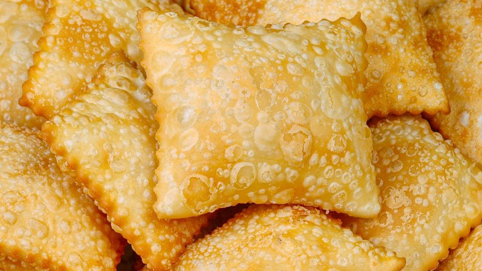
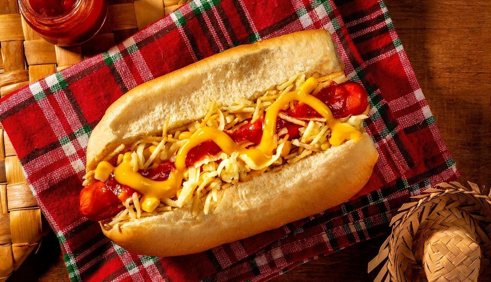
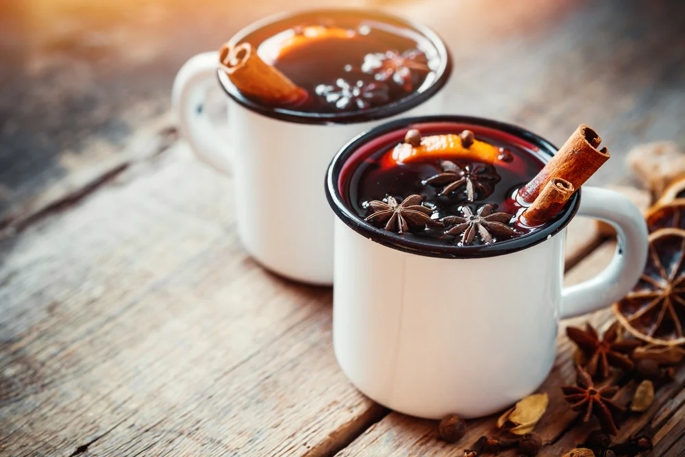

Festa Julina do IFC
"A festa junina é uma das festas mais populares do Brasil. Ela é comemorada no mês de junho e tem como objetico celebrar o fim das colheitas e agradecer aos santos. A festa junina é marcada por danças, comidas típicas e brincadeiras."
Wikipedia
- 📅 01 de Julho de 2023
- 🕒 15h - 21h
- 📌 IFC - Campus Videira
Alimentação

Pastel

Cachorro-quente
